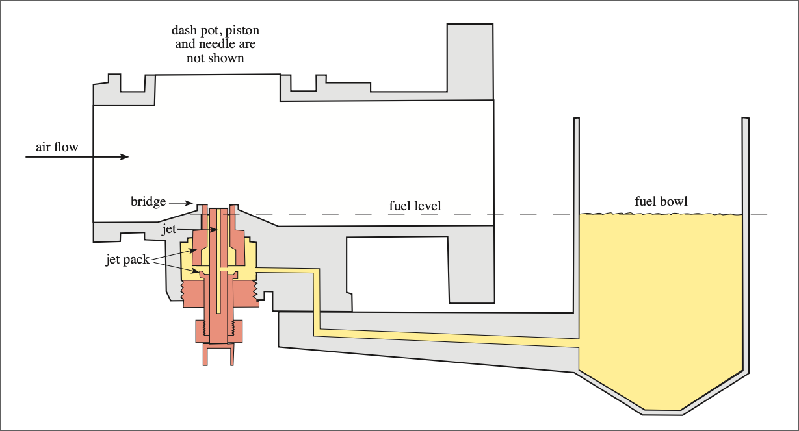
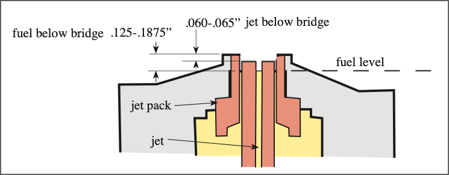
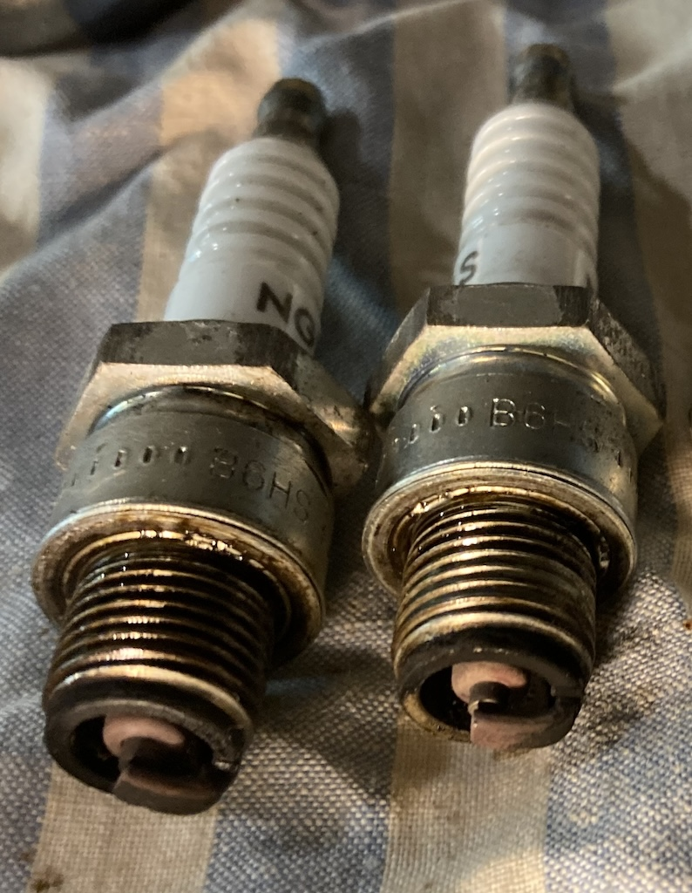

In the October 2023 issue of Main Gear I talked about tuning SU carburettors. My intent had been to describe both the traditional approach and an alternative method, along with the results of my experimentation. However, although I tried to describe both methods, a problem with stripped threads in the base of the carburettor bodies prevented me from trying the alternative method. I said that would have to wait for another day. That day came last month and what follows is the result of my labours.
As described previously, the SU carburettor uses the change in throttle position to raise or lower a piston to which a tapered needle is attached. That needle moves up and down in a fixed jet, so as the piston rises more fuel is sucked into the air flow. Having set the fuel level in the jet and adjusted the engine idle speed, the air/fuel mixture is automatically adjusted for all other engine speeds (see the October 2023 article for more details).
For the benefit of those who prefer not to tinker with the carbs on their MG, the fuel level in the float bowl (and thus in the jet) is achieved by bending the copper, forked float lever that closes the fuel inlet when the float is at the right height in the bowl. The position of the needle in the jet is then adjusted by winding the jet adjusting nut up and down.
For the TC's XPAG engine you start by 'balancing' the two carburettors, that is, get them to suck equal amounts of air into the engine. Then the traditional method of tuning requires the float lever to be bent so that, when the needle valve is closed, the lever is 7/16" below the top surface of the float bowl. The jet is then wound up and down until, if you raise the piston by 1/32", the engine speed rises slightly.
I've always used this method, although on the TC the spark plugs have always been too sooty for my liking. Also, on the mgtabc forum, an experienced TC owner wrote:
"Choke on the standard XPAG, when the SU's are properly set up, should only be needed until the engine catches. Standard XPAG should run smoothly without any choke at all when cold. Use the fast running adjustment for warmup, not the choke."
Others have commented that if you can push in the choke straight away then the engine is running too rich. However, on the TC you can adjust the idle speed from a knob on the dashboard. It is usual to wind this out, so as to increase the idle speed, until the engine has warmed up. So I normally turn on the ignition which starts the fuel pump, wind out the slow running adjustment, pull out the choke and then pull the starter knob. After quite a few turns the engine fires and I have to hold out the choke for a couple of minutes until the engine warms up. I've certainly never been able to push the choke in straight away.
The Alternative Approach
In June 2022 an extract from an article called "Taking the Mystery Out of SU Jet Heights", by Manley Ford (who, apparently, was in to MG vintage racing) was posted on the mgtabc forum. That article said that, to get the best fuel atomisation, the jet should be set to between 60-65 thou below the top of the jet bridge and the fuel level about 1/8" to 3/16" below the top of the jet tube. These measurements are illustrated in the two diagrams taken from the mgtabc post.
Having suffered from another fuel leak due to a loose hold-up bolt (the one that holds the float bowl to the carburettor body) and needing to do a pre MoT check, I decided to try this Manley Ford method. So I cleaned and adjusted the points and the plugs, checked the timing (by ear) and set about the fairly tedious process of making the adjustments to each carburettor. Positioning the jet relative to the bridge is easy, just wind the jet adjusting nut and measure the separation with some vernier callipers. But setting the fuel level is where the tedium comes in. You can lower the jet using the choke until the fuel meniscus is level with the top of the jet and then measure the jet's position, but to adjust the fuel level involves removing the top of the float bowl and removing the float lever (being careful not to lose bits that easily slide out), bending the lever, reassembling and measuring again. Then repeat this process (in my case multiple times) until the fuel level is where you want it. Of course, it's necessary to have the fuel pump running when taking the measurements.
So then the moment of truth. To my surprise the engine started after only a couple of turns. Then, to my even greater surprise, the engine would only run smoothly if I pushed the choke in completely, keeping the revs up with the slow running adjustment. I took the car for my usual 6-mile test run, which is a combination of slow village roads and fast A roads, and it had never run as well.
A few days later I took the TC for a longer, 17-mile, run and it behaved very well. On my return I removed the plugs to find that they were closer to the colour I would like them to be. My suspicion is that I won't be able to get them any better since, over it's 76 year history, the jets and the needles will have worn. I could replace both, but I've had enough of dismantling and rebuilding carburettors!
It will be a while before any improvement or degradation of fuel consumption is visible, but for the time being I'm very pleased with the result of applying the Manley Ford approach to tuning SU carburettors on my TC.